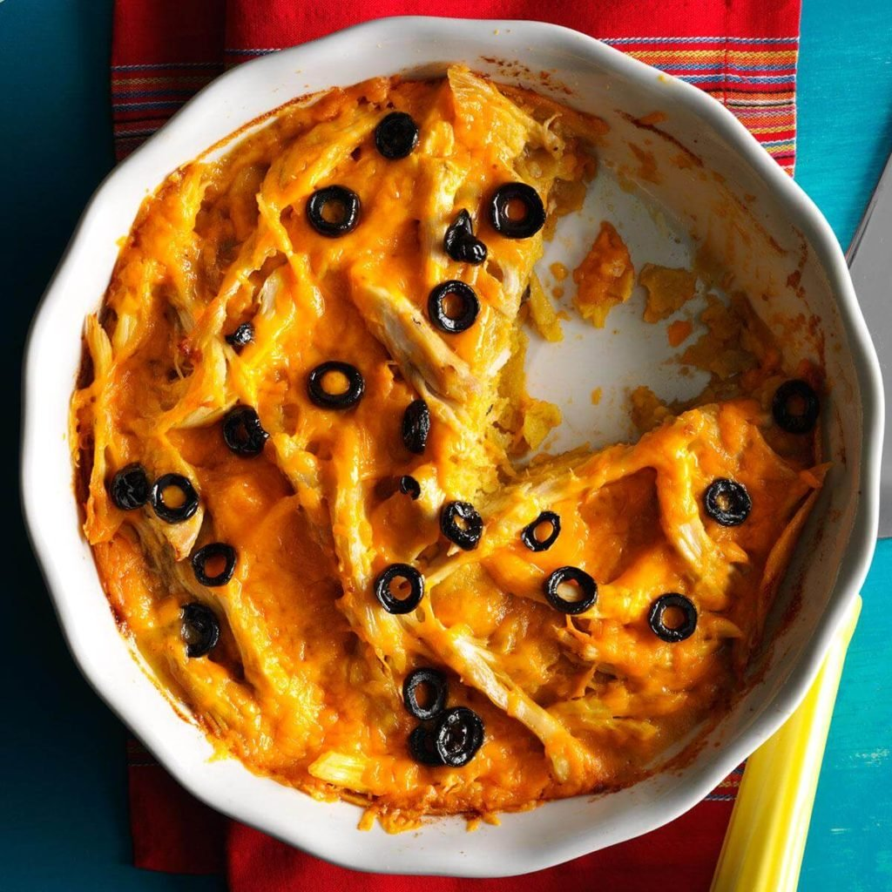

Chicken & Cheese Tortilla Pie
Ingredients
1 can (10 ounces) green enchilada sauce
8 corn tortillas (6 inches)
2 cups coarsely shredded rotisserie chicken
2 cups shredded cheddar cheese
1/4 cup sliced ripe olives
Salsa, optional
Directions
- Preheat oven to 375°. In a small skillet, warm enchilada sauce over medium heat. Dip four tortillas, one at a time, in sauce to coat both sides; arrange on bottom of a greased 9-in. pie plate, overlapping to fit.
- Layer with 1 cup chicken, 1 cup cheese and 2 tablespoons olives. Repeat tortilla and chicken layers. Pour remaining enchilada sauce over top. Sprinkle with the remaining cheese and olives.
- Bake 10-15 minutes or until heated through and cheese is melted. If desired, serve with salsa.
Nutrition Facts
1 piece: 498 calories, 27g fat (14g saturated fat), 122mg cholesterol, 889mg sodium, 26g carbohydrate (2g sugars, 3g fiber), 37g protein.
Total Time
Prep/Total Time:25 min.